Instalación de Fedora Workstation 29, parte 1
A través de esta serie de imágenes se vislumbra la instalación de Fedora 29 para usarse como estación de trabajo con el entrono gráfico KDE.
Advertencia
Los comandos escritos en estos apuntes tienen el poder de borrar los archivos y sistemas operativos. Siempre es recomendable tener un respaldo de sus archivos más importantes y hacer este procedimiento en un dispositivo de almacenamiento vacío. Su servidor sólo comparte sus experiencias y no se hace responsable de los resultados.
Las imágenes fueron obtendidas a partir de hacer la instalación en una virtualización. Por lo que notará el tamaño de las particiones es muy pequeña, por debajo del mínimo recomendado. Sea libre de ajustar el tamaño de las particiones a medida de su dispositivo y necesidades.
Descargue Fedora 29
Fedora ofrece los archivos ISO para instalar en getfedora.org. Para acelerar la instalación del entorno gráfico KDE, baje el spin-off KDE Plasma Destop.
Transfiera a una memoria USB
Averigüe con fdisk cuál dispositivo es la memoria USB
# fdisk -l
Si la memoria USB es /dev/sdX y descargó el ISO Fedora-KDE-Live-x86_64-29-1.2.iso, ejecute
# dd if=Fedora-KDE-Live-x86_64-29-1.2.iso of=/dev/sdX status=progress
Este proceso es lento. Tenga paciencia. Cuando acabe el comando, asegúrese de que se haya copiado todo ejecutando
# sync
Apague el equipo. Si tiene un disco duro nuevo, instálelo.
Encienda y desde el arranque del BIOS o UEFI elija la memoria como medio de arranque.
Instale
Elija Test this media & start Fedora-KDE-Live 29 para comprobar que los datos en el dispositivo de almacenamiento no estén corruptos. Si ya lo probó con anterioridad, elija Start Fedora-KDE-Live 29.
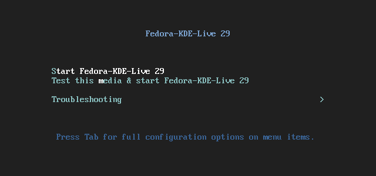
Así tendrá un entorno "vivo" de Fedora 29 KDE. De doble clic a Install to Hard Drive.
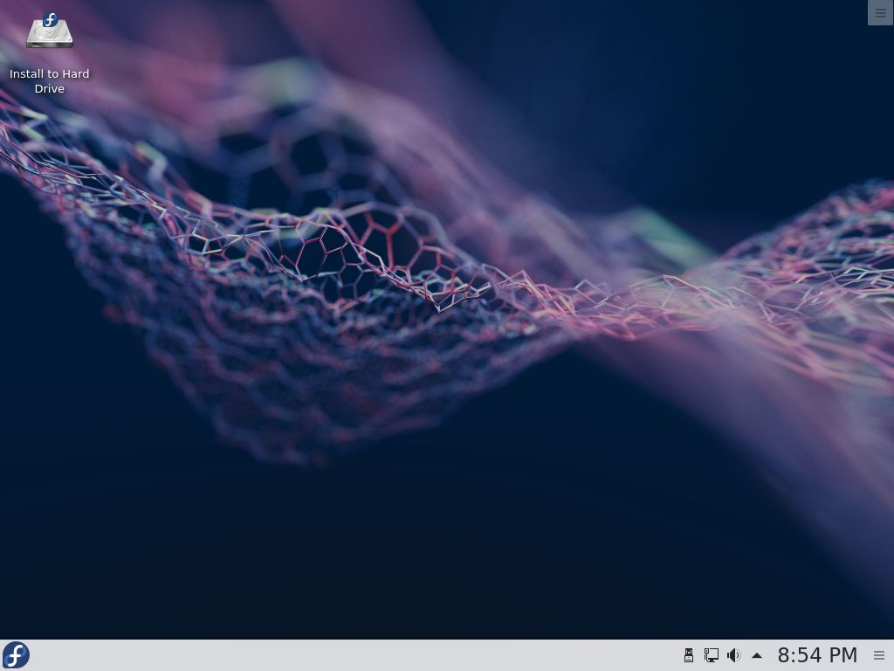
Elija Español y su país.
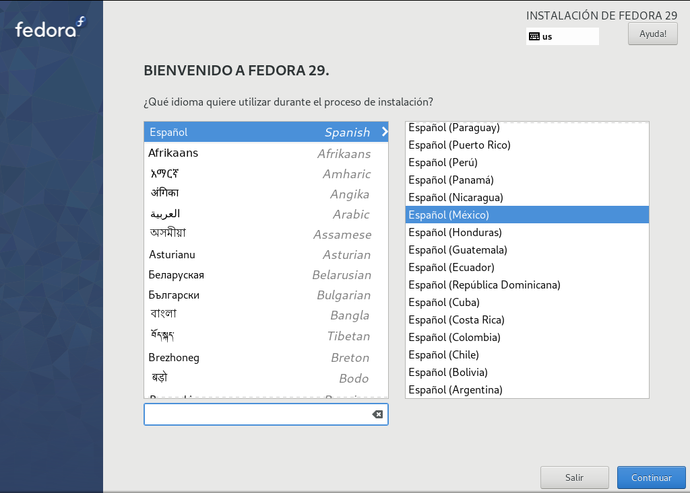
El Resumen de la Instalación nos muestra cuatro secciones a revisar o modificar. Elija Destino de la instalación.
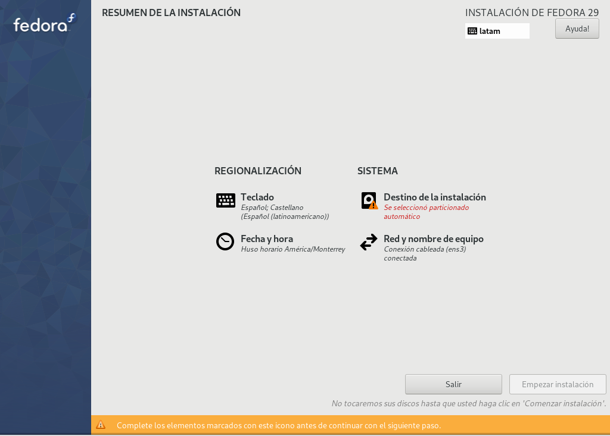
Por defecto se detecta el dispositivo de almacenamiento y está habilitada la Configuración de almacenamiento en Automática. Yo recomiendo activar Personalizada y de clic en Hecho.
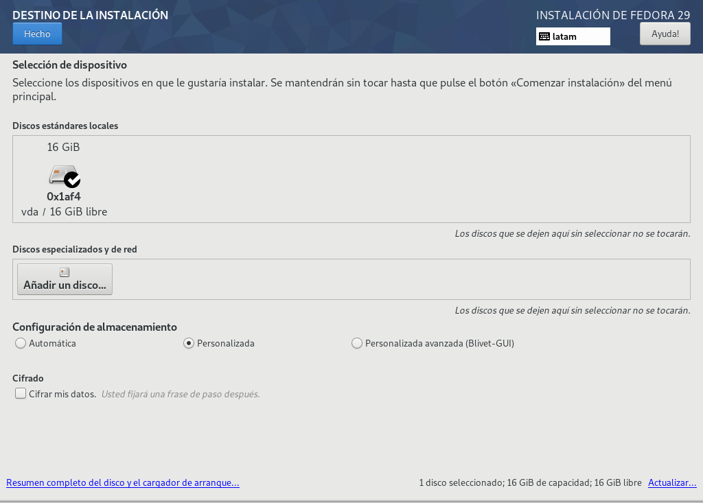
Por medio del Particionado manual tendremos completo control sobre cómo se hará la instalación. De clic en Pulse aquí para crearlas automáticamente para que el instalador nos ponga su recomendación.
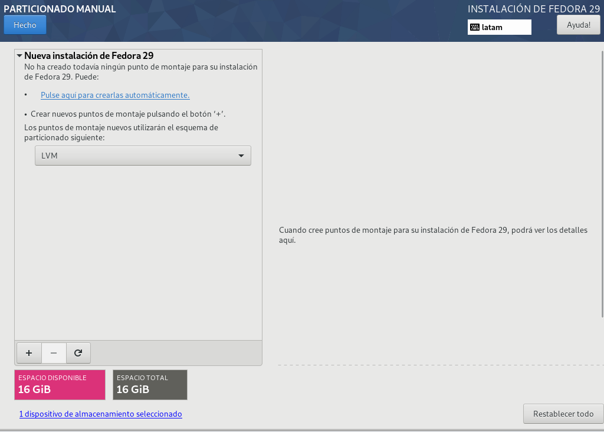
Como mínimo, debe haber una partición de arranque boot, la raíz del Fedora Linux y el área de intercambio swap. Se usa el moderno LVM para organizar el almacenamiento. De clic en Modificar... del Grupo Del Volumen.
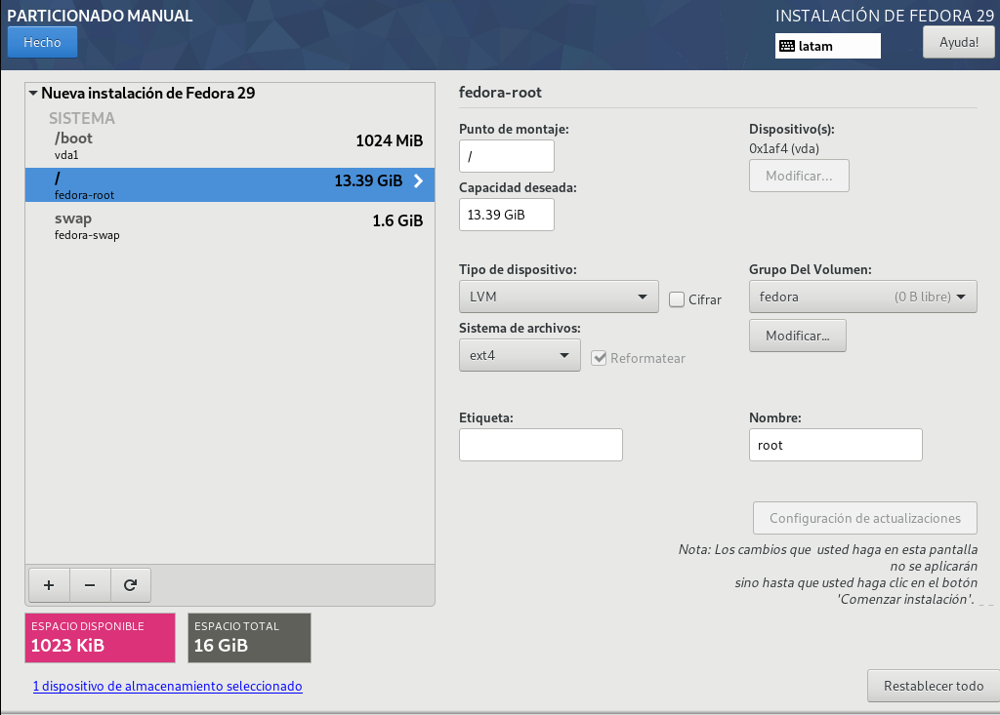
Cambie el nombre del grupo de volúmenes por una palabra simple que lo identifique. Y lo más importante, cambie el Tamaño de la política por Lo mayor posible. Esto hace que LVM use todo el espacio del dispositivo.
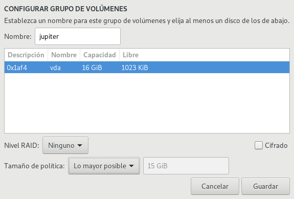
Ajuste el tamaño de las particiones y cree las que necesite, recomiendo:
- La raíz de Fedora Linux con 48 GB, mínimo 16 GB.
- El área de intercambio swap desde una vez al doble de su memoria RAM.
- Su home como lo que necesite.
- Deje espacio libre en su Grupo del volumen. Puede necesitar crear nuevas particiones en el futuro.
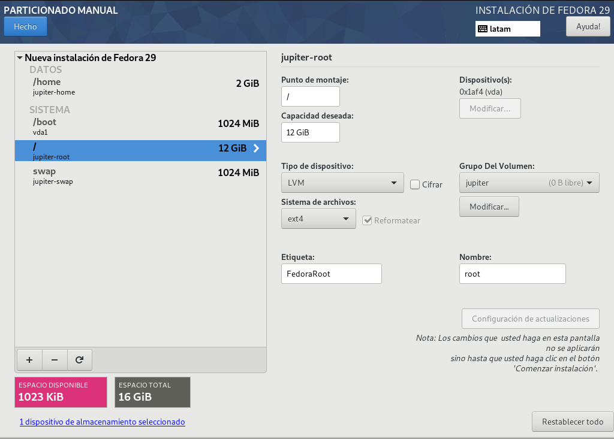
Al presionar el botón Hecho aparecerá una ventana que advierte los cambios que se harán al dispositivo. Revise y de clic en Aceptar cambios para aplicarlos.
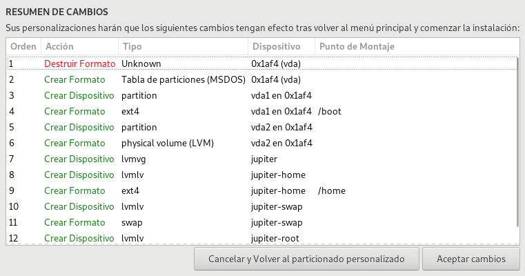
Salvo que requiera hacer otros ajustes, como cambiar la distribución del teclado o el huso horario, de clic en Empezar instalación.
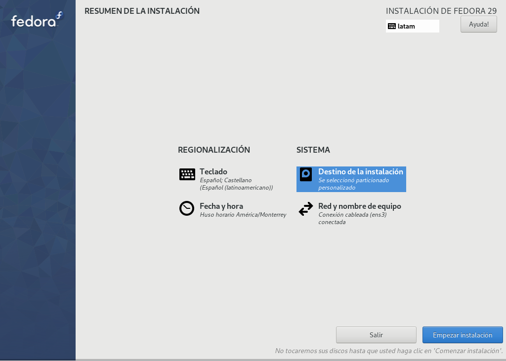
Durante la instalación, defina la contraseña de root y cree un usuario.
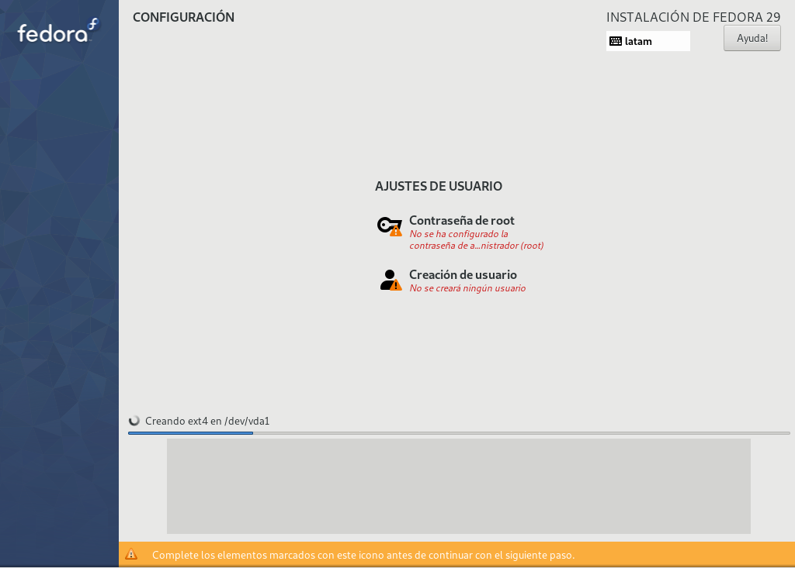
Defina la contraseña root.
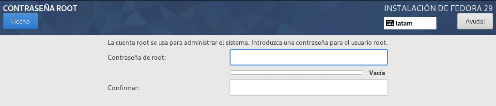
Cree un nuevo usuario. Active la casilla Hacer de este usuario un administrador para que pueda ejecutar órdenes con sudo.
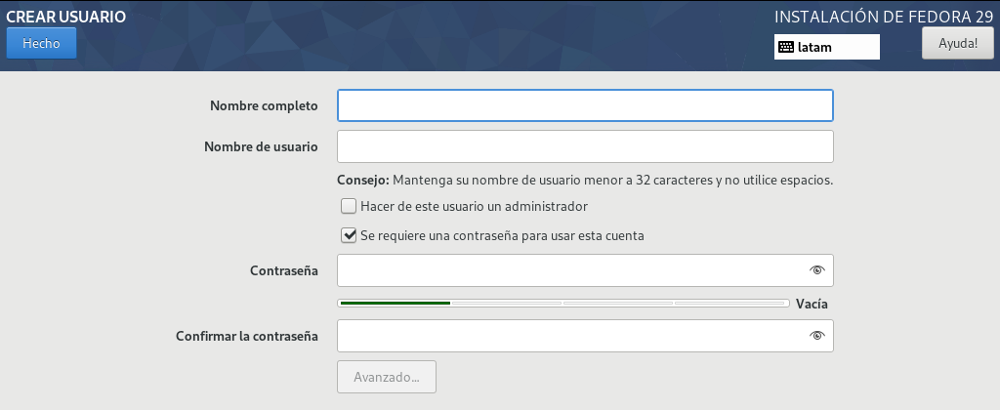
Terminada la instalación, de clic en el botón Salir.
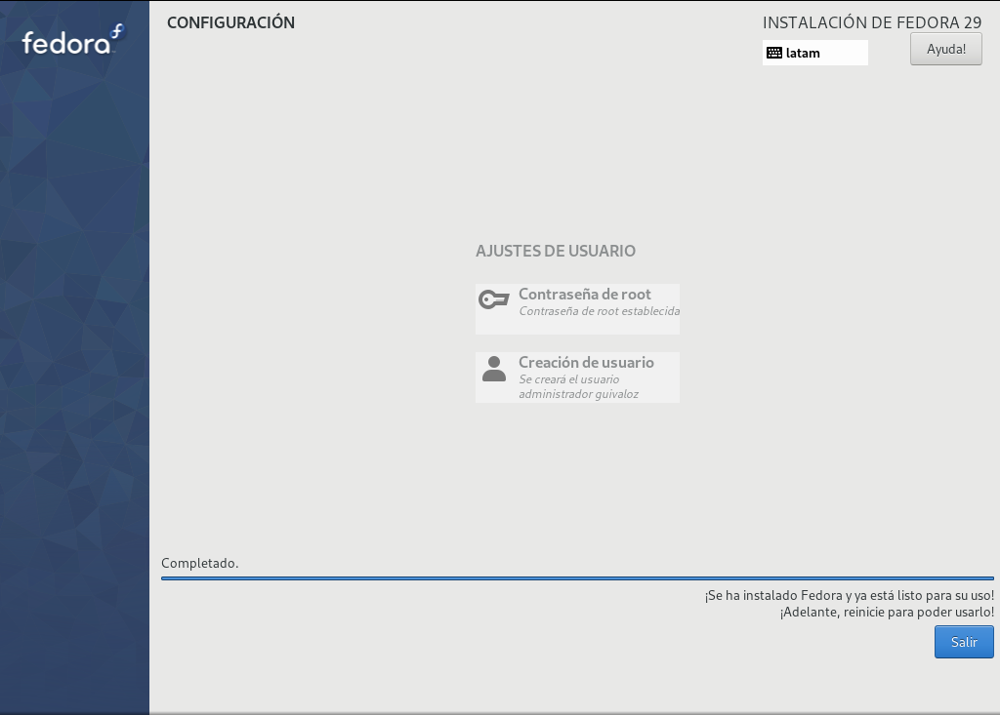
Recuerde que está en el arranque "vivo" desde la memoria USB, así que reinicie para arrancar con el nuevo Fedora Linux.
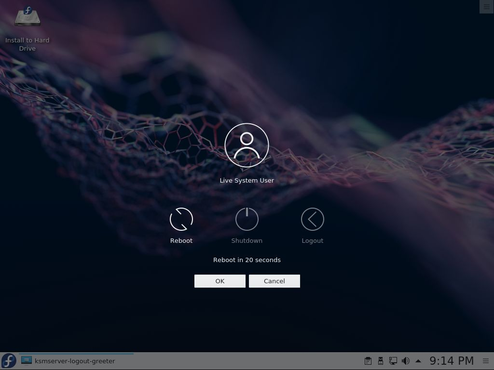
¡Listo! Conozca, use y disfrute su nueva instalación de Fedora 29 Workstation con KDE. No deje de hacer las actualizaciones de software.
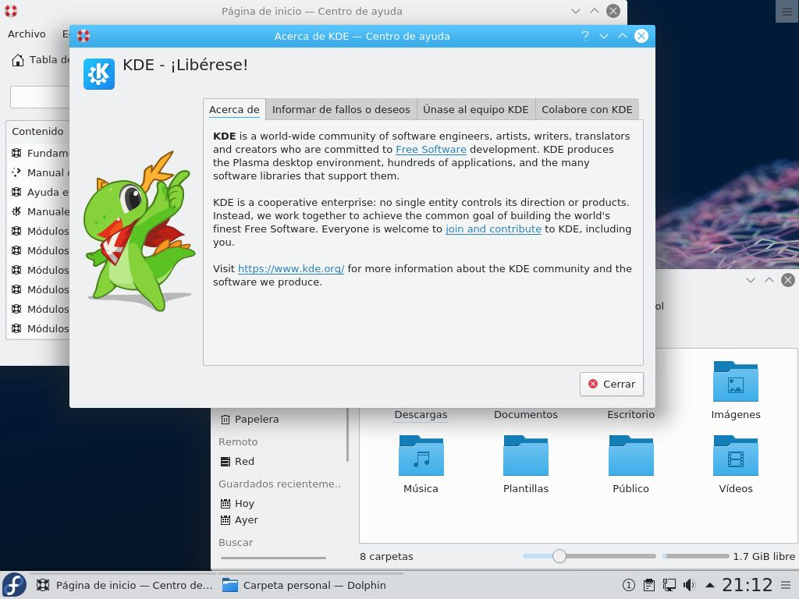
En la segunda parte de esta guía, se publicarán los comandos para instalar software adicional.